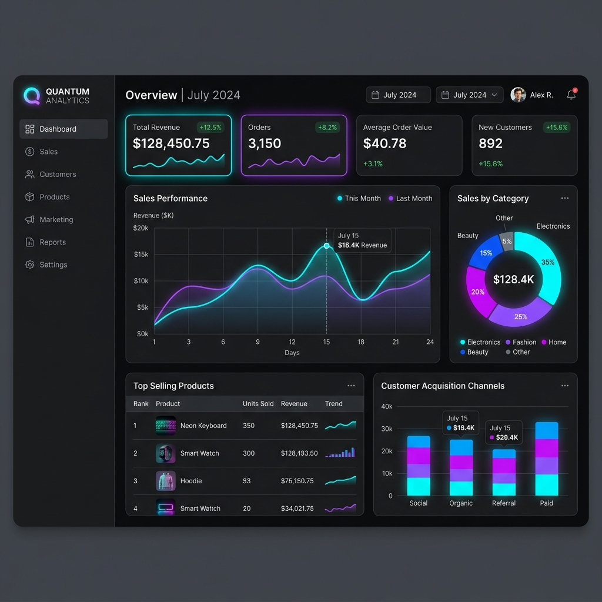

03.1 / Platform
Telemetry Engine
E-Commerce Transaction Pipeline
Intent
Standardize client-side telemetry across high-throughput web transactions.
Infrastructure
Pure performance pipeline, custom charting widgets, dynamic memory lifecycle.
Perception
Muted, dark-first, data-dense dashboards engineered to minimize operator fatigue.
Outcome
60% latency reduction in user interaction latency; $120M+ volume tracked.
